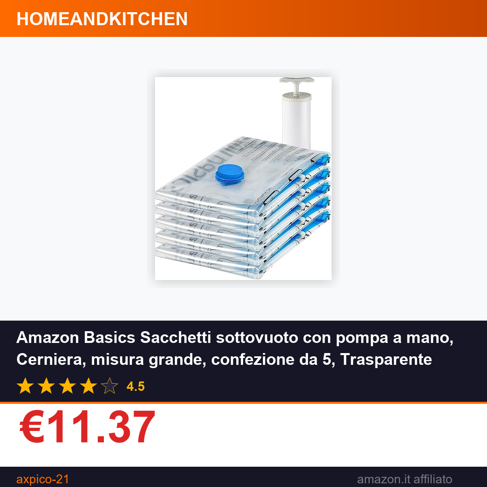

Amazon Basics Sacchetti sottovuoto con pompa a mano, Cerniera, misura grande, confezione da 5, Trasparente
⚠️ Il prezzo potrebbe variare. Verifica il prezzo aggiornato su Amazon prima di acquistare. In qualità di Affiliato Amazon ricevo un guadagno dagli acquisti idonei.
Chi non ha mai faticato a riporre cappotti invernali, coperte pesanti o abiti fuori stagione, ritrovandosi con armadi e cassetti strabordanti? I sacchetti sottovuoto Amazon Basics con pompa a mano, disponibili in confezione da 5 pezzi di misura grande, sono la soluzione pratica e accessibile per ottimizzare ogni spazio domestico. Grazie al design trasparente e alla chiusura a cerniera ermetica, tenere in ordine i capi stagionali non è mai stato così semplice.
Caratteristiche principali
- Confezione da 5 sacchetti di misura grande, ideali per riporre coperte matrimoniali, piumoni invernali, pile di abiti o biancheria pesante
- Chiusura a cerniera ermetica facile da sigillare, compatibile con la pompa a mano inclusa nella confezione per rimuovere l'aria in pochi minuti
- Materiale trasparente che permette di identificare subito il contenuto senza dover aprire ogni singolo sacchetto
- Prodotto Amazon Basics, garantisce la qualità e l'affidabilità del marchio, ed è progettato per essere riutilizzato più volte
Prezzo e offerta
Al prezzo di €11.37, questo set rappresenta un'ottima opportunità di risparmio per chi ha bisogno di una soluzione di stoccaggio sottovuoto immediata: il costo include infatti 5 sacchetti di misura grande e la pompa a mano, senza costi aggiuntivi per accessori separati. A confermare che non si tratta di un prezzo stracciato a discapito della qualità c'è la valutazione media di 4.5 su 5 stelle, frutto delle recensioni di acquirenti verificati che hanno lodato la tenuta del vuoto e la resistenza del materiale nel tempo. Essendo un prodotto Amazon Basics, inoltre, si ottiene la garanzia di un marchio noto a un costo nettamente più accessibile rispetto a brand specializzati.
Che tu stia riorganizzando l'armadio per la stagione calda, sistemando la cantina o preparando un trasloco, questi sacchetti sottovuoto ti faranno risparmiare tempo e spazio preziosi. Non perdere l'offerta a €11.37: Acquista su Amazon